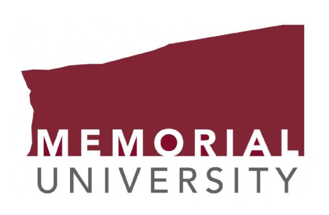
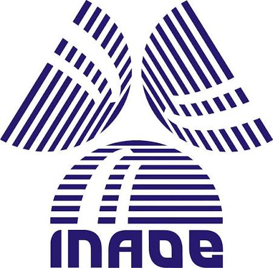
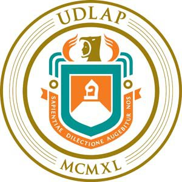
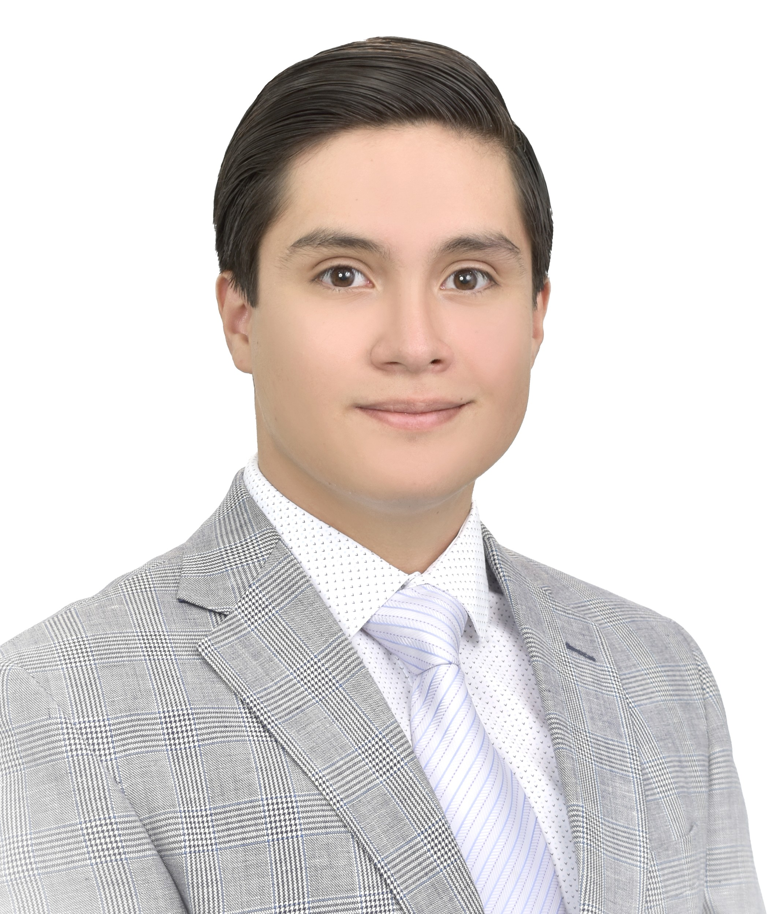

I am a Biomedical Engineer currently pursuing a Master’s degree in Computer Science at Memorial University of Newfoundland. I began my undergraduate studies in Biomedical Engineering at Universidad de las Américas Puebla (UDLAP) in 2022. Throughout my bachelor’s degree, I actively participated in a wide range of research projects, academic events, and competitions, including EXPOCEM, SILLONDROMO at the Instituto Nacional de Astrofísica, Óptica y Electrónica (INAOE), CNIB 2025, and ICOKG 2025. In parallel with my university studies, I completed several professional certifications and specialized courses through institutions such as the University of Toronto and Boston Scientific, as well as a Diploma in Neurolearning from Universidad Anáhuac.
After completing my research thesis in 2026, I graduated with honours, receiving the distinction of summa cum laude. During the same period, I successfully published a scientific article in Biology, an MDPI journal (Q1; Impact Factor: 4.3; CiteScore: 7.3), presenting the research I conducted at INAOE as part of my social service and professional internship. Shortly after completing my bachelor’s degree, I was awarded a fully funded scholarship to pursue a Master’s degree in Computer Science at Memorial University of Newfoundland, where I began my graduate studies in September 2026. This academic transition has allowed me to further integrate my background in biomedical engineering and scientific research with advanced training in computer science.